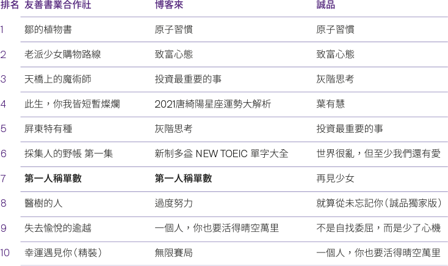

臺灣觀察
臺灣觀察
出版PUBLISHING
獨立書店通路的數據積木──
探勘友善書業供給合作社進銷存數據
文策院為完整出版通路產業的全貌，堆疊產業整體輪廓，在2021年與「臺灣友善書業供給合作社」(簡稱友善書業) 共同探勘該社前一年度的完整進銷存數據，就書店這項子產業，補完大型網路書店、實體連鎖書店以外的獨立書店部分數據資料。友善書業2015年銷貨數量為37,691冊，到2020年已達144,468冊，可說雖遇疫情但仍持續成長。此外，出貨的種類在2017年以後維持在兩萬餘 種，而2020年增加幅度較大。
會員書店每種單品平均銷售量介於4至5冊 (件)，可發現銷售趨向「少量多樣」模式。在退貨率方面，平均約為兩成，較一般經銷商低，主因訂貨自由，視各社員書店所需，自然退貨較少。
比較2019年至2021年前半年「實際出貨量 」前十名圖書與博客來及誠品書店兩個主要通路的銷售榜3，只有2021年村上春樹的《第一人稱單數》(時報)同時出現在友 善書業和博客來的榜單，其餘名次品項均與兩家通路 榜單沒有交集。對比目前臺灣閱讀市場，暢銷類型集中在大眾心理學(人文)和投資理財 (商業)，友善書業銷貨最多的類型連續三年都是「臺灣/華文文學」，可見獨立書店購書者對於本地文學圖書的偏好。
社員書店於問卷中表示，透過友善書業幾乎可以訂到任何想訂的書，減少無法達到出貨門檻的困擾，協助完成深入鄉鎭推廣閱讀的最後一哩路。 此次友善書業的數據共享作為代表獨立書店通路營運數據的一塊積木，期待未來能有更多數據擁有者參與，方能在閱讀多元化的時代，堆疊變化、建構產業的下一步。
2021年1-6月友善書業合作社、博客來、誠品銷售排行――

比較2019至2021年前半年，友善書業合作社與博客來、誠品的銷售榜前十名，
村上春樹的《 第一人稱單數 》( 時報 )是唯一同時出現在不同通路榜單的圖書，其餘品項均無交集 。
黃能揚平常喜歡看看電視、陪兩個男孩上電影院、有訂MOD電影199吃到飽，睡覺前看看電子書，有相同興趣可聯絡：nyhuang@taicca.tw。